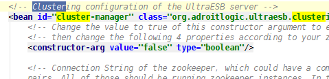

This gives you an overall idea of the cluster management functionality available on the UltraESB.
If clustering is disabled this page will only just state that. If you want to see clustering in action
you need to enable clustering on the ultra-root.xml spring configuration found at the conf directory
of the UltraESB installation home. For that matter open up the per-said file and search for the key
cluster, you will be able to see something like follows;

Change the
constructor-arg value from "false" to "true" in that configuration, and you have enabled
clustering. Running a cluster requires a ZooKeeper instance running too and UltraESB has a pre-configured
ZooKeeper instance shipped with it, you should first start the ZooKeeper by issuing the following command;
sh bin/zkServer.sh start
and then re-start the UltraESB, come back here to see the following options.
- Cluster Navigator - Navigate through the nodes in the UltraESB cluster
- Control Panel - Invoke control operations in the cluster like Round-Robin graceful restart
- Command History - History of the cluster control commands
With those UltraESB clustering gives you a centralized control of your complete cluster in a single console. For more information refer
to the article on the
UltraESB clustering concept and
Clustered deployment of UltraESB